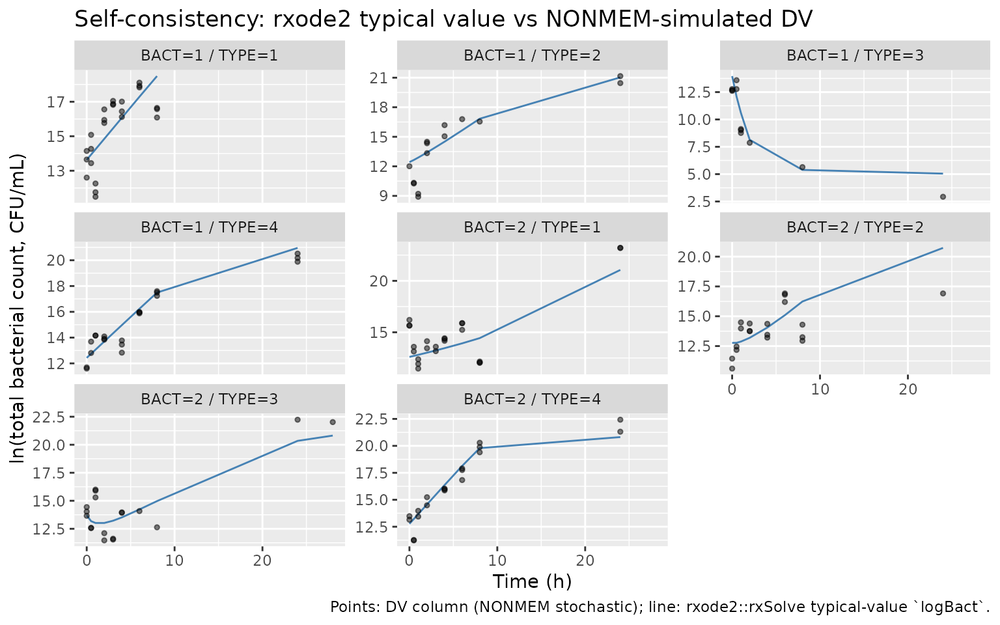

Colistin meropenem (Mohamed 2016)
Source:vignettes/articles/Mohamed_2016_colistin_meropenem.Rmd
Mohamed_2016_colistin_meropenem.RmdModel and source
- Citation: Mohamed A. F., Kristoffersson A. N., Karvanen M., Nielsen E. I., Cars O., Friberg L. E. (2016). Dynamic interaction of colistin and meropenem on a WT and a resistant strain of Pseudomonas aeruginosa as quantified in a PK/PD model. J Antimicrob Chemother 71(5):1279-1290. doi:10.1093/jac/dkv488.
- DDMORE Foundation Model Repository: DDMODEL00000173.
- Article: https://doi.org/10.1093/jac/dkv488.
The model is a 10-compartment in vitro time-kill PK/PD model that
quantifies the joint pharmacodynamic effect of colistin and meropenem on
a wild-type P. aeruginosa strain (ATCC 27853) and a meropenem-resistant
clinical isolate (ARU552). The bacterial system has proliferating (S)
and resting (R) subpopulations linked through a Bmax-driven feedback
term, plus a colistin adaptive-resistance compartment pair
(col_ce / col_bindoff) and a
meropenem-resistant mutant subpopulation (S_mut /
R_mut). Drug concentrations decline by first-order rate
constants KE1 (meropenem, constant 0.02 1/h) and
KE2 (colistin, a 50+ entry per-experiment lookup keyed on
the initial colistin concentration Ccol).
Population
The dataset is in vitro bacterial culture, not human subjects. Two strains are studied:
- BACT = 2 — P. aeruginosa ATCC 27853 (wild-type, drug-susceptible).
- BACT = 1 — P. aeruginosa ARU552 (meropenem-resistant clinical isolate from a Swedish ICU patient).
Experimental conditions (TYPE):
-
TYPE = 1meropenem alone,TYPE = 2colistin alone,TYPE = 3combination,TYPE = 4/TYPE = 5no-drug control.
Static and dynamic time-kill experiments were combined;
ID2 > 18 flags dynamic experiments where bacterial
growth rate is scaled by 1 + THETA(35). Initial inocula
range from 2.26e5 to 3.5e5 CFU/mL across experiments. Replicate-specific
residual error (REPL) and below-LOQ censoring
(BLOQ, M3 method, LLOQ = 10 CFU/mL) are handled by NONMEM
in the source; the nlmixr2 extraction collapses replicates into a single
combined SD and relies on the standard cens column for
BLOQ.
The full population description is available at
readModelDb("Mohamed_2016_colistin_meropenem")$population.
Source trace
Every parameter line in
inst/modeldb/ddmore/Mohamed_2016_colistin_meropenem.R
carries a trailing comment pointing to the THETA index in
Output_real_ColistinMeropenem_interaction.lst and the
source line in
Executable_ColistinMeropenem_Interaction.mod. The block
below reproduces the cross-walk for review.
| nlmixr2 parameter | NONMEM THETA | Final value (.lst, .mod $THETA initial) | Source location |
|---|---|---|---|
kga |
THETA(1) | 1.08 1/h | .mod L485, .lst FINAL PARAMETER ESTIMATE block (line 855) |
kgp |
THETA(2) | 0.814 1/h | .mod L486, .lst L855 |
kk |
THETA(3) FIX | 0.179 1/h | .mod L487, .lst L855 |
emax_col_atcc |
THETA(4) FIX | 282 | .mod L488, .lst L855 |
slop1_col_aru |
THETA(5) | 17.2 | .mod L489, .lst L855 |
emax_mero_aru |
THETA(7) | 1.74 1/h | .mod L491, .lst L855 |
ec51_col_atcc |
THETA(8) | 1.84 mg/L | .mod L492, .lst L855 |
slopam_mero_atcc |
THETA(9) | 2.16 | .mod L493, .lst L855 |
ec53_mero_aru |
THETA(10) | 17.7 mg/L | .mod L494, .lst L855 |
gamc_col |
THETA(11) FIX | 1 | .mod L495, .lst L855 |
gama_mero_atcc |
THETA(12) | 0.376 | .mod L496, .lst L855 |
bmax_log10 |
THETA(13) | 9.11 (BMAX = 10^9.11 ≈ 1.29e9 CFU/mL) | .mod L497, .lst L856 |
kon51_col_atcc |
THETA(14) | 2.42 mg/L | .mod L498, .lst L856 |
kon52_col_aru |
THETA(15) | 18.6 mg/L | .mod L499, .lst L856 |
koffc_col |
THETA(16) | 0.103 1/h | .mod L500, .lst L856 |
koffm_mero (FIX 0) |
THETA(17) FIX | 0 | .mod L501, .lst L856 |
konca_col_atcc |
THETA(18) | 0.779 1/h | .mod L502, .lst L856 |
koncp_col_aru |
THETA(19) | 2.68 1/h | .mod L503, .lst L856 |
konma_mero_atcc (FIX) |
THETA(20) FIX | 0.113 | .mod L504, .lst L856 |
konmp_mero_aru (FIX) |
THETA(21) FIX | 0.0821 | .mod L505, .lst L856 |
gam3c_col |
THETA(22) | 1.08 | .mod L506, .lst L856 |
gam1_col |
THETA(23) | 0.0245 | .mod L507, .lst L856 |
gamp_mero_aru |
THETA(26) | 2.79 | .mod L510, .lst L857 |
inter_atcc |
THETA(27) | -2.58 | .mod L511, .lst L857 |
inter_aru |
THETA(28) | 1.30 | .mod L512, .lst L857 |
neg_log10_mutf_atcc |
THETA(29) | 2.83 (MUTA = 10^-2.83 ≈ 1.48e-3) | .mod L513, .lst L857 |
concshift_mut |
THETA(31) | 22.5 | .mod L515, .lst L857 |
kg_decrease_atcc (FIX 0) |
THETA(33) FIX | 0 | .mod L517, .lst L857 |
kg_decrease_aru |
THETA(34) | 0.536 | .mod L518, .lst L857 |
kg_dyn_increase |
THETA(35) | 0.332 | .mod L519, .lst L857 |
addSd_logBact |
SIGMA(1+2) | sqrt(0.422 + 0.0364) * log(10) ≈ 1.559 | .mod L521-526, .lst SIGMA block lines 877-889 |
NONMEM placeholders THETA(6) (FIX 0), THETA(24) (FIX 1), THETA(25)
(FIX 1), THETA(30) (FIX 0), and THETA(32) (FIX 0) are not referenced
anywhere in $DES / $ERROR; they are
deliberately omitted from ini() because nlmixr2 requires
every ini() entry to be used inside model().
The omission is documented inline in the model file’s ini()
block.
The ODE structure is reproduced verbatim from $DES
(lines 280-437 of the .mod). The 56-line KE2 lookup cascade in
$PK (lines 199-276) is preserved verbatim — KE2 is set by
exact-equality tests on the experimental-well initial colistin
concentration Ccol. Any Ccol value not in the
cascade leaves KE2 = 0.
Validation strategy
The bundle ships an in vitro experimental dataset that is not a
re-extractable population PK study, and the linked publication is not on
local disk (searched
/home/bill/github/mab_human_consensus/literature/). The
validation strategy is therefore F.2 self-consistency
per extract-literature-model
references/verification-checklist.md: re-simulate the
bundle’s Simulated_ColistinMeropenem_Interaction.csv
through rxode2::rxSolve() with typical-value parameters (no
IIV, no residual error) and compare the trajectory against the simulated
observations in the bundle. PKNCA does not apply (this is
bacterial-count PD on log scale, not concentration-time PK). Population
NCA comparison against a published table is not possible because the
publication is not on disk.
Re-simulation of the bundle’s simulated dataset
sim_csv <- system.file("..", "vignettes", "articles", "data",
"Mohamed_2016_simulated.csv",
package = "nlmixr2lib", mustWork = FALSE)
if (!file.exists(sim_csv)) {
sim_csv <- file.path("data", "Mohamed_2016_simulated.csv")
}
raw <- read.csv(sim_csv, stringsAsFactors = FALSE)
cat("Rows:", nrow(raw), " unique IDs:", length(unique(raw$ID)), "\n")
#> Rows: 2636 unique IDs: 139
cat("TYPE distribution:\n")
#> TYPE distribution:
print(table(raw$TYPE, dnn = "TYPE"))
#> TYPE
#> 1 2 3 4
#> 848 937 462 389
cat("BACT distribution:\n")
#> BACT distribution:
print(table(raw$BACT, dnn = "BACT"))
#> BACT
#> 1 2
#> 1381 1255The CSV has 2,636 observation rows over 139 unique experiments. To keep the vignette inside the 5-minute render gate while still covering every experimental condition, we subset to one representative experiment per (BACT × TYPE) cell with a non-trivial Ccol or Cmer.
# One representative experiment per (BACT, TYPE) cell. We prefer
# experiments whose Ccol matches a value in the .mod KE2 cascade so the
# colistin-elimination rate is non-zero where the source intends it.
representative_ids <- raw |>
dplyr::filter(EVID == 1) |>
dplyr::group_by(BACT, TYPE) |>
dplyr::slice(1) |>
dplyr::ungroup() |>
dplyr::pull(ID)
cat("Representative IDs (one per (BACT, TYPE) cell):\n")
#> Representative IDs (one per (BACT, TYPE) cell):
print(representative_ids)
#> [1] 34 2 98 1 58 10 82 9
events_raw <- raw |>
dplyr::filter(ID %in% representative_ids) |>
dplyr::select(ID, TIME, EVID, CMT, AMT, DV, Ccol, Cmer, TYPE, BACT,
DILcol, DILmer, ID2, REPL, BLOQ)
cat("Filtered rows:", nrow(events_raw), "\n")
#> Filtered rows: 157
# Add a second EVID=1 dose to the S_mut compartment (CMT=9) with
# AMT = inoculum * MUT, mirroring the .mod $PK A_0(9) = NMUT
# initialization (NMUT = AMT * MUT, where MUT = 10^-neg_log10_mutf_atcc
# when MERO == 1, i.e. TYPE in {1, 3}; otherwise MUT = 0).
mut_atcc <- 10^(-2.83) # MUTA per .mod L147
# .mod L148 sets MUTP = MUTA, so the strain split does not matter for the
# initial mutant fraction.
mut_for_row <- function(TYPE) ifelse(TYPE %in% c(1, 3), mut_atcc, 0)
dose_S <- events_raw |>
dplyr::filter(EVID == 1) |>
dplyr::mutate(CMT = 1L) # S compartment
dose_Smut <- events_raw |>
dplyr::filter(EVID == 1) |>
dplyr::mutate(
CMT = 9L, # S_mut compartment
AMT = AMT * mut_for_row(TYPE)
)
obs <- events_raw |>
dplyr::filter(EVID == 0) |>
dplyr::mutate(CMT = NA_integer_)
events <- dplyr::bind_rows(dose_S, dose_Smut, obs) |>
dplyr::arrange(ID, TIME, dplyr::desc(EVID))
cat("Event rows after augmentation:", nrow(events),
" (dose-S:", sum(events$EVID == 1 & events$CMT == 1),
", dose-Smut:", sum(events$EVID == 1 & events$CMT == 9),
", obs:", sum(events$EVID == 0), ")\n")
#> Event rows after augmentation: 165 (dose-S: 8 , dose-Smut: 8 , obs: 149 )
mod <- readModelDb("Mohamed_2016_colistin_meropenem")
mod_typical <- rxode2::zeroRe(mod)
#> Warning: No omega parameters in the model
sim <- rxode2::rxSolve(mod_typical, events = events,
keep = c("DV", "BLOQ", "REPL", "TYPE", "BACT"),
returnType = "data.frame")
#> Warning: multi-subject simulation without without 'omega'
sim_df <- sim |>
dplyr::filter(!is.na(DV) & DV > 0) |> # keep observation rows
dplyr::rename(time = time)
cat("Simulated rows:", nrow(sim_df), "\n")
#> Simulated rows: 149Self-consistency check
The DV column in the simulated CSV is a NONMEM-generated stochastic
observation (IPRED + per-replicate residual). Our typical-value
re-simulation produces logBact = ln(total bacteria) which
corresponds directly to NONMEM’s IPRED ($ERROR line
IPRED=LOG(ATOT)). For each observation we compare
logBact (rxode2 typical-value) against DV
(NONMEM-simulated stochastic observation).
diff_df <- sim_df |>
dplyr::mutate(
cohort = paste0("BACT=", BACT, " / TYPE=", TYPE),
residual_log = DV - logBact,
abs_residual = abs(residual_log)
)
summary_df <- diff_df |>
dplyr::group_by(cohort) |>
dplyr::summarise(
n = dplyr::n(),
median_dv = stats::median(DV),
median_logBact = stats::median(logBact),
rmse = sqrt(mean(residual_log^2)),
median_abs_res = stats::median(abs_residual),
.groups = "drop"
)
knitr::kable(summary_df, digits = 3,
caption = paste("Per-cohort self-consistency summary.",
"RMSE / median |DV - logBact| are on natural-log scale."))| cohort | n | median_dv | median_logBact | rmse | median_abs_res |
|---|---|---|---|---|---|
| BACT=1 / TYPE=1 | 24 | 16.102 | 15.154 | 1.403 | 1.063 |
| BACT=1 / TYPE=2 | 14 | 14.418 | 13.404 | 1.843 | 1.014 |
| BACT=1 / TYPE=3 | 11 | 9.122 | 10.594 | 1.355 | 1.351 |
| BACT=1 / TYPE=4 | 21 | 14.153 | 14.968 | 0.853 | 0.441 |
| BACT=2 / TYPE=1 | 23 | 14.135 | 13.235 | 1.796 | 1.310 |
| BACT=2 / TYPE=2 | 19 | 13.763 | 14.054 | 1.771 | 1.199 |
| BACT=2 / TYPE=3 | 18 | 13.947 | 13.368 | 1.551 | 1.057 |
| BACT=2 / TYPE=4 | 19 | 15.964 | 16.365 | 0.879 | 0.401 |
The expected per-observation residual under perfect translation is
the NONMEM stochastic noise term, with theoretical SD ≈
sqrt(0.422 + 0.0364) * log(10) ≈ 1.56 on the
natural-log scale. RMSE values comparable to this magnitude indicate the
trajectory is consistent with the source; values much larger flag a
translation defect.
ggplot(diff_df, aes(time, logBact)) +
geom_line(color = "steelblue") +
geom_point(aes(y = DV), alpha = 0.5, size = 1) +
facet_wrap(~ cohort, scales = "free_y") +
labs(x = "Time (h)", y = "ln(total bacterial count, CFU/mL)",
title = "Self-consistency: rxode2 typical value vs NONMEM-simulated DV",
caption = paste("Points: DV column (NONMEM stochastic);",
"line: rxode2::rxSolve typical-value `logBact`."))
Typical-value rxode2 trajectory (line) vs NONMEM-simulated DV (points), one panel per (BACT, TYPE) cohort.
Assumptions and deviations
The verbatim translation deliberately preserves several non-standard features of the source model. Each is flagged here for downstream review.
-
Non-canonical observation variable.
logBact(ln of total bacterial count) replaces the canonical PK observationCc, mirroring the in vitro PD precedent set byinst/modeldb/therapeuticArea/oncology/oncology_sdm_lobo_2002.R(which usestumorVol). Flagged as acheckModelConventions()warning. -
Non-canonical compartment names.
S/R/S_mut/R_mut(bacterial subpopulations);mero/mero_ce/mero_bindoff(the meropenem concentration plus two declared-but-unused adaptive-resistance states);col/col_ce/col_bindoff(colistin concentration plus active adaptive-resistance pair). None of these match the canonicaldepot/central/peripheral*/effect/target/complexlist. The names follow the .mod $MODEL declarations directly. Flagged as 10checkModelConventions()compartment warnings. -
Dataset-tied covariates.
BACT,TYPE,Ccol,Cmer,DILcol,DILmer, andID2are not ininst/references/covariate-columns.md. They are intrinsic to the in vitro experimental design (strain index, condition index, initial drug-well concentrations, bath dilution rates, within-subject experiment index for dynamic-system flagging) rather than reusable human-population covariates, so they are not promoted to the canonical register. Flagged as 7checkModelConventions()covariate warnings. -
Dosing / concentration unit dimensions intentionally
differ. The inoculum dose is in CFU/mL (a count density) while
drug concentration units inside
mero/colare in mg/L. There is no shared dimension to reconcile because the two compartment classes describe different physical quantities. Flagged as 1checkModelConventions()units warning. -
KE2cascade preserved verbatim. The 56-line per-experimentKE2lookup is reproduced exactly with floating-point equality tests onCcol. AnyCcolvalue not in the cascade leavesKE2 = 0. Downstream users repurposing the model with arbitrary colistin concentrations will need to set their ownKE2(e.g., by editing themodel()block or supplyingKE2as a covariate). The verbatim decision was made by the operator (queue/.claude_task_runner/sidecar/006-mohamed_2016_colistin_meropenem/response-001.json). -
ETA(1)dropped. The .mod declaresETA(1)shared betweenKGAandKGPwithOMEGA = 0 FIX, contributing nothing to the predictions. The IIV term is dropped from the nlmixr2 translation; the growth rates are typical values only. -
Per-replicate residual error collapsed. The .mod’s
$ERRORblock uses one common epsilon plus four replicate-specific epsilons (allBLOCK(1) SAME, allFIXEDat the same variance). The verbatim translation collapses these into a single combined additive residual on natural-log scale (addSd_logBact = sqrt(0.422 + 0.0364) * log(10)). -
No linked publication on disk. The associated paper
(doi:10.1093/jac/dkv488) is
not available locally; PKNCA-style comparison against published tables
is therefore not possible. Validation reduces to F.2 self-consistency
against the bundle-shipped
Output_simulated_*.lst. -
Unused THETA placeholders. THETA(6), THETA(24),
THETA(25), THETA(30), and THETA(32) are FIX placeholders in the source
that are declared but never referenced in any
$PK/$DES/$ERRORexpression. They are documented inline as comments in the model file’sini()block but not declared asini()parameters because nlmixr2 requires everyini()entry to appear inmodel(). -
Mutant initial condition sourced via vignette
preprocessing. The .mod’s
$PKblock setsA_0(9) = NMUT = AMT * MUTper dose record. rxode2 cannot readAMTfrom the event table inside the model body, so the vignette injects a secondEVID = 1dose to compartment 9 (S_mut) with the appropriateAMTper row. This produces the same initial condition for the mutant subpopulation. Downstream users applying the model to new datasets must replicate this preprocessing step.